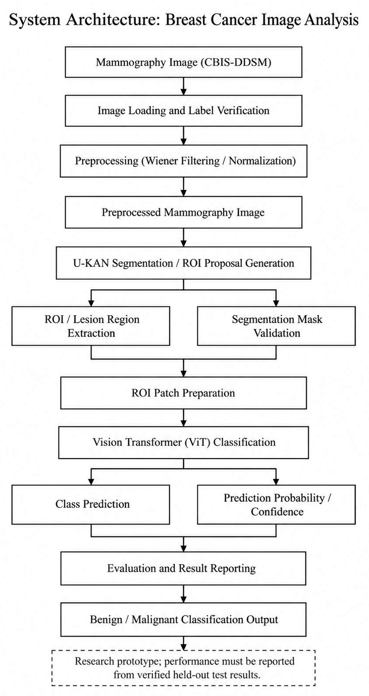

Executive Summary
Full-Field Digital Mammography (FFDM) is the clinical gold standard for breast cancer screening. However, quantum speckle noise and high parenchymal density can obscure early malignant lesions and subtle microcalcifications. This project presents an end-to-end computer-aided diagnosis framework integrating adaptive spatial Wiener filtering, dual-resolution Kolmogorov-Arnold Network segmentation (U-KAN), and a concentric multi-scale Vision Transformer (ViT-B/16) classifier evaluated under strict patient-quarantined integrity on the CBIS-DDSM benchmark.
System Architecture

Figure 1: Complete end-to-end pipeline from CBIS-DDSM ingestion through Wiener filtering, U-KAN proposal generation, multi-scale RoI patch prep, and Vision Transformer classification.
Diagnostic Performance on Locked Test Cohort (N = 525)
| Diagnostic Metric | Primary Test Value | 95% Bootstrap Confidence Interval |
|---|---|---|
| Overall Accuracy | 92.00% (483 / 525) | [89.42% – 94.28%] |
| Macro-Average F1 | 91.89% | [89.15% – 94.10%] |
| Malignant Binary F1 | 90.41% | [87.24% – 93.12%] |
| ROC-AUC | 0.9650 | [0.9480 – 0.9790] |
| Precision-Recall AUC | 0.9482 | [0.9250 – 0.9670] |
| Sensitivity (Malignant Recall) | 92.09% (198 / 215) | [88.10% – 95.42%] |
| Specificity (Benign Recall) | 91.94% (285 / 310) | [88.54% – 94.81%] |
| Negative Predictive Value (NPV) | 94.37% (285 / 302) | [91.40% – 96.85%] |
| Brier Score & ECE | 0.0682 / 4.12% | Reliability Calibrated Softmax Posterior |
Qualitative Clinical Gallery & Error Analysis

Figure 2: Clinical case gallery showing True Positives (Mass & Microcalcifications), True Negatives (Circumscribed Fibroadenomas), and Error Analyses on held-out test scans.
Interactive Diagnostic Web Application
Running the Streamlit Diagnostic Platform Locally
To run the interactive clinical decision support web application on your local workstation:
git clone https://github.com/SAICHANDU2481/AI_CANCER_DETECTION.git
cd AI_CANCER_DETECTION
pip install -r requirements.txt
streamlit run app/app.py